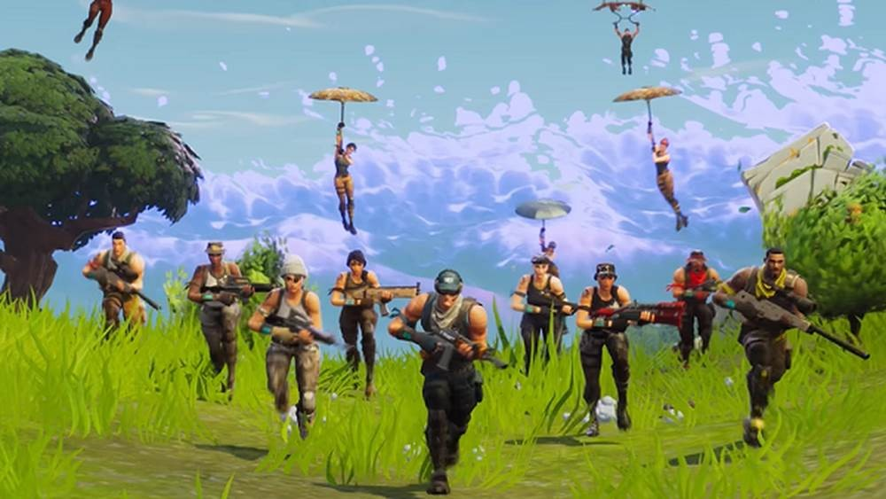

#1 Epic Games anuncia Copa do Mundo do Battle Royale
Fortnite, game grátis no estilo Battle Royale, terá sua própria Copa do Mundo. O anúncio foi feito pela Epic Games na noite da última terça-feira (12). Após o sucesso do jogo, que teve portabilidade para Nintendo Switch anunciada na E3, a desenvolvedora investe no cenário competitivo do game, que pode entrar de vez para a categoria dos esports.
Em menos de um ano, Fortnite atingiu o número de 125 milhões de jogadores, superando o até então carro-chefe dos Battle Royales, Playerunknown's Battlegrounds. Celebrando a marca, a Epic Games anunciou que vai investir US$ 100 milhões (aproximadamente R$ 370 milhões em conversão direta) em competições durante a temporada 2018-2019. Agora, a produtora revelou como será o esquema da competição.
Os US$ 100 milhões serão divididos entre competições organizadas pela própria comunidade, eventos online e grandes competições ao redor do mundo. A Epic reforça que qualquer jogador pode competir e vencer. As qualificatórias para Copa começam no segundo semestre em data a definir, e o mundial será realizado no final de 2019. O foco da Copa do Mundo de Fortnite serão os duos e solos.
A desenvolvedora também destacou que não vai vender times ou franquias, de forma similar ao que é feito na Overwatch League, e nem permitirá que terceiros façam isso. "Esteja você na competição ou assistindo em casa, queremos que seja divertido para todos", diz o vídeo.